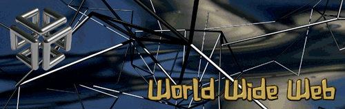

WebFORCE er Silicon Graphics løsninger innen World Wide Web. Denne siden inneholder informasjon om programvaren i WebFORCE. Maskinvaren i WebFORCE er beskrevet på en egen webside.
En webløsning består i hovedsak av tre enheter:
- En "Browser" som gir deg muligheten til å surfe på websidene.
- En "Server" som er rask nok og har en bred nok I/O båndbredde til å håndtere mange surfere (klienter). Denne serveren bør også ha mulighet for å kryptere dataoverføringer for å sikre dataene ved for eksempel pengeoverføringer.
- En "HTML-editor" som er enkel å bruke, ikke bare med tekst men også med lyd, bilder og video.
Hva er så Silicon Graphics fordeler i forhold til andre løsninger:
- Silicon Graphics bruker Netscape Navigator som er en av de raskeste Browserene i markedet. Fordelene Silicon Graphics har er at våre arbeidsstasjoner har alle verktøy som skal til for å lese/se/høre tekst, bilde, video og lyd. Snart vil 3D være tilgjengelig på WWW. Da vil Silicon Graphics dra nytte 3D teknologien som er i alle våre arbeidsstasjoner.
- Silicon Graphics har meget raske servere sammen med NetSite Communication Server eller NetSite Commerce Server, kan håndtere mange samtidige klienter. Generell høy I/O båndbredde gjør at Silicon Graphics benyttes av kanskje de mest besøkte websites i verden. Denne ytelsen vil snart gjenspeile seg i WebStone benchmarken som blir lansert i april. Denne benchmarken vil fortelle deg hvor godt egnet en maskin er som en webserver.
Silicon Graphics gir deg følgende råd;
"Det er bedre å ikke ha noen website enn en treg website."
- WebMagic er Silicon Graphics HTML-editor, som støtter standard HTML 2.0. De fleste editorer på markedet i dag støtter kun tekst. WebMagic støtter i tillegg bilder, video og lyd. Editoren virker som en ren tekstbehandler hvor du drar inn bilde-, video- og lydfiler. Enklere kan det ikke bli. I tillegg har vi alle nødvendige verktøy for konverterig og komprimerig av de nødvendige filformater som benyttes i WWW. Merk at den HTML koden du genererer med editoren, kan leses av alle typer HTML Browser eller HTML Player.
Ta kontakt med oss for en demonstrasjon; "Seeing is Beliving."
- Silicon Graphics er med på å styre den fremtidige utviklingen av WWW. Vi fokuserer på følgende områder
- WebSpace er den første 3D-vieweren som støtter VRML standarden. VRML er basert på Open Inventor teknologien fra Silicon Graphics. Template Graphics vil levere WebSpace til andre UNIX plattformer, Windows, NT og Mac.
Se også vår side om Virtual Reality Modeling Language .
Dersom du allerede har installert WebSpace, kan du se på noen av de 3D objektene vi har laget:
- WebStone benchmarken . Silicon Graphics vil fokusere på å lage løsninger som er raske på alle de grunnleggende funksjoner innen webløsninger. Dette vil blant annet gjenspeile seg i resultatene som vi kommer til å oppnå i WebStone benchmarken.
- Adobe lager programvare som er velegnet til å produsere bilder med avanserte grafiske effekter. Silicon Graphics bundler med Adobe Photoshop og Adobe Illustrator i maskinvareproduktene i WebFORCE. Adobe har også annonsert at Adobe Acrobat vil bli portet til Silicon Graphics arbeidsstasjoner.
- Samarbeid med de forskjellige web leverandørene:
- Data Mining. Silicon Graphics jobber med løsninger for å hente ut informasjon av webløsningene. Dette kan dreie seg om søk, statestikk m.m. Silicon Graphics samarbeider med Sybase om utvikle løsninger for Data Mining innen World Wide Web.
- SGML dokumenter. Silicon Graphics jobber med løsninger for konvertering mellom HTML og SGML dokumenter.
Følgende WebFORCE produkter er tilgjengelige:
Retur til Programvare siden.
Oppdatert, 6.juni 1995